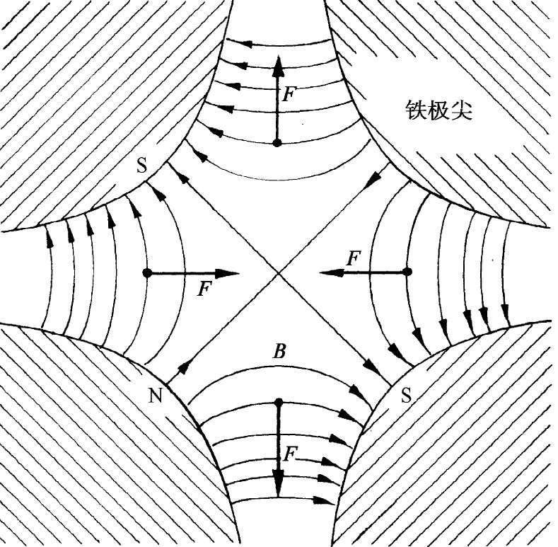
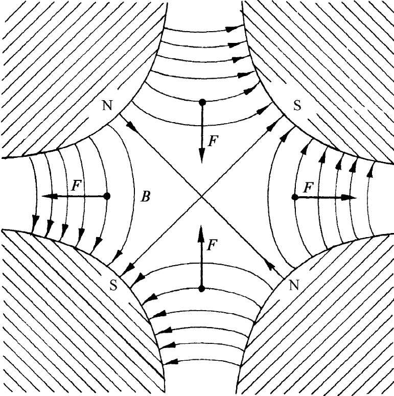

像这么小的n值只会给出相当“弱”的聚焦作用。很清楚，一个有效得多的径向聚焦作用应该由一个大的正梯度（n≫1）来提供，但这时垂直方向力就将产生一个强大的去焦作用。同理，大的负斜率（n≪-1）会给出一个较强的垂直方向力，但却会引起径向的去焦作用。然而，约十年前就已经认识到，在强聚焦与强去焦之间的交变力仍然能够产生一个净 的聚焦力。
为解释交变梯度聚焦法 是如何起作用的，我们将首先描述一个四极透镜的工作情况，它以上述相同的原理为基础。试设想一个匀负磁场加于图29-14中的场上，使其强度调整至在轨道处的场为零。合成的场——对于与中立点间的小位移来说——会像图29-15所示的场。这样一种四极磁体称为“四极透镜”。一个在中点之左或右（从读者一边看）进入场内的正粒子会被推回中心。如果这个粒子是在上面或下面进入的，则将被从中点推开 。这是一个平行方向的聚焦透镜。如果水平梯度被反向——正如可通过变换所有磁极的极性而做到的那样——则所有力的符号都将反号，因而我们就有一个垂直方向的聚焦透镜，如图29-16所示。对于这样一种透镜，场强——因而焦聚力——会随着离轴的透镜距离线性地增大。
|  |  |
| 图29-15 水平方向聚焦的四极透镜 | 图29-16 垂直方向聚焦的四极透镜 |
现在设想有两个这样的透镜串联安放着。若一粒子从与轴心有某个水平位移的地方进入场中，如图29-17（a）所示，则它在第一个透镜中将被朝轴的方向偏转。当抵达第二个透镜时，它距离轴已较近，因而向外的力较小，向外的偏转也就较小。所以有一个朝轴向的净弯曲，平均 效应是水平方向的聚焦作用。另一方面，若我们考察一个在进场时在垂直方向上就离开轴的粒子，则其路径将如图29-17（b）所示。该粒子初时被偏转以致离开 轴，但之后在较大位移时到达那第二个透镜，在那里它会感觉到一个较强大的力，因而被弯向轴。净效应再次为聚焦作用。这样一对四极透镜独立地对于水平方向和垂直方向的运动起作用——十分像一个光学透镜。四极透镜被用来形成并控制粒子束，与光学透镜用于控制光束的方法十分相似。
还应该指出，一个交变梯度系统并不总会 产生聚焦作用。如果梯度太大（相对于粒子动量或两透镜的间隔来说），则净效应可能是一个去焦作用。你若设想图29-17那两个透镜的距离增大了三或四倍，就会看清楚这种作用可能是怎样发生的了。
图29-17 利用一对四极透镜而得到的水平方向聚焦和垂直方向聚焦
现在就让我们回到同步加速器的导向磁体上来。可以认为，它由叠加了均匀场的“正”、“负”透镜交替序列构成的。平均来说匀强磁场用来把粒子弯曲成一个水平圆周（对于垂直方向运动不起作用），而该交变透镜组对任何也许已走错了路的粒子会起作用——始终把它们（在平均上）推向中间轨道上去。
有一套漂亮的机械模拟器，可以用来演示在“聚焦”力与“去焦”力之间交替变换着的力能够产生一个净的“聚焦”效应。试想象一副机械摆，它含有一根末端装有重物的坚固棒 ，该棒悬挂在一个被安排好的轴上，轴由一部电动机驱动着的曲柄带动而使其迅速做上下振动。像这样的摆会有两个 平衡位置，除了正常的下垂悬挂位置外，该摆还有一个“向上悬挂”着的平衡位置——摆锤高居于轴上 ！这样的摆如图29-18所示。
图29-18 一副配有振动轴的摆，可以使位于轴上的摆锤有一个稳定位置
通过下述论证我们能够看出轴的垂直方向运动相当于一个交变聚焦力。当轴向下加速时，摆锤倾向于向内运动，如图29-19所示。当摆锤向上加速时，这效应就被反转。促使摆锤恢复朝向轴线的力虽然在交替变换着，但其平均效应仍然是一个朝向轴线的力。所以这个摆将会围绕正常平衡位置正对面的中立位置来回摆动。
图29-19 轴的向下加速会引起摆朝着垂直方向运动
当然，可用一种容易得多的办法来保持一副摆倒悬着，那就是把它平衡 于你的手指之上！不过你还可试一试，在同一只手指 上平衡两根互为独立 的棒！或者把你的眼睛掩闭着而试着平衡一根棒！平衡含有对即将出现的错误进行改正的意思，而一般说来，倘若同时有几件事情都发生错误的话，平衡是不可能的。在一部同步加速器中有数以亿计的粒子同时在环行，其中每一个都可能从不同的“误差”出发。我们刚才描述的那种聚焦作用对它们就都有效。